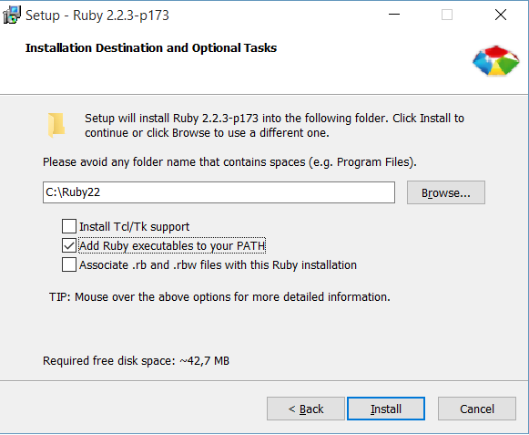
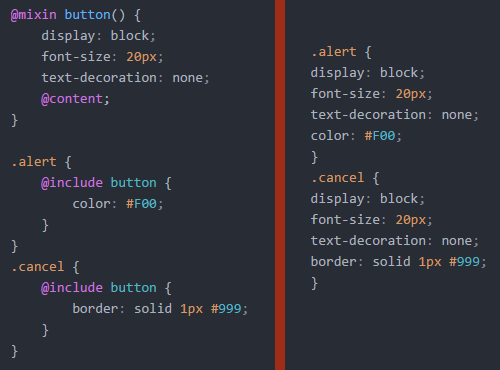

05.November 2015
Studiengang Medieninformatik an der Technischen Hochschule Köln
Campus Gummersbach
Elisha Witte und Fabian Fuchs
Eine Skriptsprache mit eigener Syntax
Generiert gültigen CSS code
Syntactically Awesome Stylesheets
1. Ruby herunterladen unter: rubyinstaller.org
2. CMD Öffnen
gem install sass3. Kontrolle
sass -v
Sass 3.4.19 (Selective Steve)Ruby bei Mac's vorinstalliert
sudo gem install sasssudo apt-get install rubysudo gem install sasssass input.scss:output.css sass inputDirectory:OutputDirectorysass inputDirectory:output.csssass --watch input:outputsass input:output --style compressed$color: #000;
body {background-color: $color;}
um zu überprüfen ob SASS korrekt eingerichtet ist.Mögliche Optionen: --style nested/expanded/compact/compressed
Hinweis für Win8/10 64Bit User: eventuell funktioniert --watch nicht mit der aktuellen SASS-Version. Mit gem uninstall sass können Sie SASS deinstallieren, und dann mit gem install sass -v 3.4.0 eine ältere Version installieren. Dann sollte es keine Probleme mehr geben.
Sass ermöglicht es, globale und lokale Variablen zu definieren. Variablen werden mit einem $-Zeichen deklariert
$primaryColor: #DD1166;
h1 {
color: $primaryColor;
}
Wird kompiliert zu:
h1 {
color: #DD1166;
Innerhalb von Selektoren können lokale Variablen definiert werden:
$primaryColor: #DD1166;
h1 {
$primaryColor: #4952E1; // Lokale Variable
color: $primaryColor;
}
p {
color: $primaryColor;
}
Wird kompiliert zu:
h1 {
color: #4952E1;
}
p {
color: #DD1166;
}
Es empfiehlt sich, semantische Variablennamen zu wählen.
$color-shadow $color-primary $color-accent $color-background $color-background-shade $color-background-invert $color-text $color-text-weak $color-text-strong $color-text-heading
Man sollte von der allgemeinsten Eigenschaft auf die spezifischste gehen:
$color-link
$color-link-dark;
$color-link-light;
Mit Sass können wir unser Projekt in verschiedene .SCSS Dateien aufteilen, die dann später zu einer .CSS Datei zusammengefügt werden. Dies erhöht gerade bei größeren Projekten die Wartbarkeit und ermöglicht einen leichteren Überblick über unser Projekt.
Mit klassischem CSS müssten wir separate .CSS Dateien erstellen und hochladen, und für jede dieser Datein müsste der Browser eine Anfrage abschicken, worunter die Effizienz der Seite erheblich leidet.
Mit Sass können wir beispielsweise folgende Projektstruktur einrichten:
css/ | |-- base/ | |-- _reset.scss | |-- _variables.scss | |-- _functions.scss | |-- _mixins.scss |-- layout/ | |-- _grid.scss |-- vendor/ | |-- _bootstrap.scss | |-- _jquery-ui.scss| `-- main.scss # primary Sass file
Sass Dateien mit dem Unterstrich-Präfix (_), werden nicht in eigene .CSS Dateien kompiliert, sondern weden lediglich in eine andere Datei mit @import eingebunden (dort muss dann nichtmal der Unterstrich angeben werden). Der Anfang unserer main.scss Datei könnte dann so aussehen:
// Modules and Variables
@import "base/reset";
@import "base/variables”;
@import "base/functions";
@import "base/mixins";
// Layout
@import "layout/grid";
@import "layout/typography";
// Third-party
@import "vendor/bootstrap";
@import "vendor/jquery-ui";
In Sass können wir ähnlich wie in HTML Selektoren verschachteln:
.container {
width: 90%;
p {
color: #DD1166;
}
}
Wird kompiliert zu:
.container { width: 90%; }
.container p { color: #DD1166; }
Wir können auch direkt mehrere Elemente ansprechen:
.container {
background: #fff;
p, h2 {
color: #fff
background: #000;
}
}
Wird kompiliert zu:
.container { background: #fff; }
.container p, .container h2 {
color: #fff;
background: #000; }
Mit dem ‘&’-Zeichen können wir außerdem das Parent-Element ansprechen. Beispielsweise:
a {
color: blue;
text-decoration: none;
&:hover {
text-decoration: underline;
}
&:visited {
color: purple;
}
}
Wird kompiliert zu:
a {
color: blue;
text-decoration: none;
}
a:hover {
text-decoration: underline;
}
a:visited {
color: purple;
}
Wir haben bereits einen Typ der Vererbung in Sass kennen gelernt: das Nesting. Mit @extend können wir außerdem Styles von anderen Selektoren erben:
.icon {
transition: background-color: ease .2s;
background-color: red;
&:hover {
background-color: blue;
}
}
.error-icon {
@extend .icon;
/* error specific styles */
}
.info-icon {
@extend .icon;
/* info specific styles */
}
Wird kompiliert zu:
.icon, .error-icon, .info-icon {
transition: background-color ease .2s;
background-color: red; }
.icon:hover, .error-icon:hover, .info-icon:hover {
background-color: blue; }
.error-icon {
/* error specific styles */ }
.info-icon {
/* info specific styles */ }
Was ist aber, wenn wir in unserem Code kein Element der Klasse .icon verwenden, sondern dieses nur erweitern möchten?
Placeholder definieren Styles die vererbt werden können, werden selber allerdings nicht zu CSS kompiliert.
%icon {
transition: background-color ease .2s;
background-color: red;
&:hover {
background-color: blue;
}
}
.error-icon {
@extend %icon;
/* error specific styles */
}
.info-icon {
@extend %icon;
/* info specific styles */
}
Wird kompiliert zu:
.error-icon, .info-icon {
transition: background-color ease .2s;
background-color: red; }
.error-icon:hover, .info-icon:hover {
background-color: blue; }
.error-icon {
/* error specific styles */ }
.info-icon {
/* info specific styles */ }
Ein sehr nützliches Feature von SASS ist, dass es mathematische Operationen unterstüzt.
Unterstütze Operatoren sind: Addition (+), Subtraktion (-), Division (/), Multiplikation (*), Modulo (%), Gleichheit (==), Ungleichheit (!=).
font-size: 24px/2; // 12px
width: 3*2em; // 6em
Achtung: es können nicht Operationen zwischen verschiedenen Einheiten durchgeführt werden!
$container-width: 100% - 20px; // Produziert Fehler!
Bei einer Division zwischen zwei Werten der selben Einheit, kürzen sich diese weg:
$zahl: 24px/12px; // Ergebnis ist '2', nicht '2px'
$font-size: $zahl*1em; // Ergebnis ist '2em'
SASS unterstützt außerdem komplexere Aufrufe mit Schleifen die man aus der klassischen Programmierung kennt: @if, @for, @each, @while
p {
@if 1 + 1 == 2 { border: 1px solid; }
}
@for $i from 1 through 3 {
// Do something }
Mehr Informationen: SASS Dokumentation
Mixins ermöglichen ähnlich wie Placeholder das Definieren von Vorlagen, die später im Code einfach eingebunden werden können.
Der große Unterschied: wir können Mixins Variablen als Parameter übergeben, und abhängig von diesen Variablen unterschiedliche Muster erstellen.
Sinnvoll für z.B. neue CSS3 Techniken die noch Vendor-Prefixes benötigen.
Compass bietet eine sehr umfangreiche Bibliothek von vorgefertigten Mixins an.
@mixin vgradient ($colors...) {
background: nth($colors, 1);
background: -webkit-linear-gradient($colors);
background: -o-linear-gradient($colors);
background: -moz-linear-gradient($colors);
background: linear-gradient($colors);
}
$colors wird als Parameter dem Mixin übergeben, beispielweise mit @include vgradient(#fff, #000);
Wir schreiben $colors... um SASS darauf hinzuweisen dass wir eine Liste mit beliebig vielen Werten übergeben können.
Zu guter Letzt bietet SASS auch die Möglichkeit ganze Funktionen festzulegen, die zur Compilierzeit ausgeführt werden. Funktionen produzieren nicht wie Placeholder oder Mixins ein Stück Code das an anderer Stelle eingefügt wird, sondern führen bestimmte Berechnungen durch und liefern das Ergebnis mit @return. Dieses kann dann beispielsweise in Mixins oder auch direkt im Code verwendet werden.
@function my-calculation-function($some-number, $another-number){
@return $some-number + $another-number
}
SASS bietet eine ganze Reihe an nützlichen vorgefertigten Funktionen an, so können wir z.B. mit darken($color, $amount) ganz leicht einen abgedunkelten Farbcode berechnen. Also beispielsweise:
$color-font: #DD1166;
a {
color: $color-font;
&:hover {
color: darken($color-font, 30%);
}
}
}
Wird kompiliert zu:
a {
color: #DD1166;
}
a:hover {
color: #4f0624; // Berechneter Farbcode
}
font-size: 12px; // Fallback für ältere Browser die rem nicht unterstützen font-size: 0.75rem;
Tipp: Denken Sie an den Hinweis zur Umrechnung zwischen Einheiten aus den letzten Folien. Wir gehen davon aus, dass 1rem = 16px.
Bei Mixins erhalten wir mit @content den Inhalt, der zwischen den geschweiften Klammern eines Mixin-Aufrufs steht. Beispiel:
Was sind CSS-Präprozessoren?
SASS
Variablen: $variable;
Projektstruktur: @import 'path/file';
Nesting
Vererbung & Placeholder: %name {} -> @extend %name;
Mixins: @mixin name($variablen) {} -> @include name($variablen);
Funktionen: @function name($variablen){}